1~2주 전 쯤에 아파트 주민이랑
대화하다가 여쭤보시길래 아들만 셋이라고 했는데
아빠가 능력이 없네라는
충격적인 이야기 들었다
이 이야기 듣고 진심으로 충격 받았다
농담하는 표정이 아니라 진지한 표정이였다
사회가 어쩌다가 아들을 혐오하는
세상이 되었는지 모르겠다
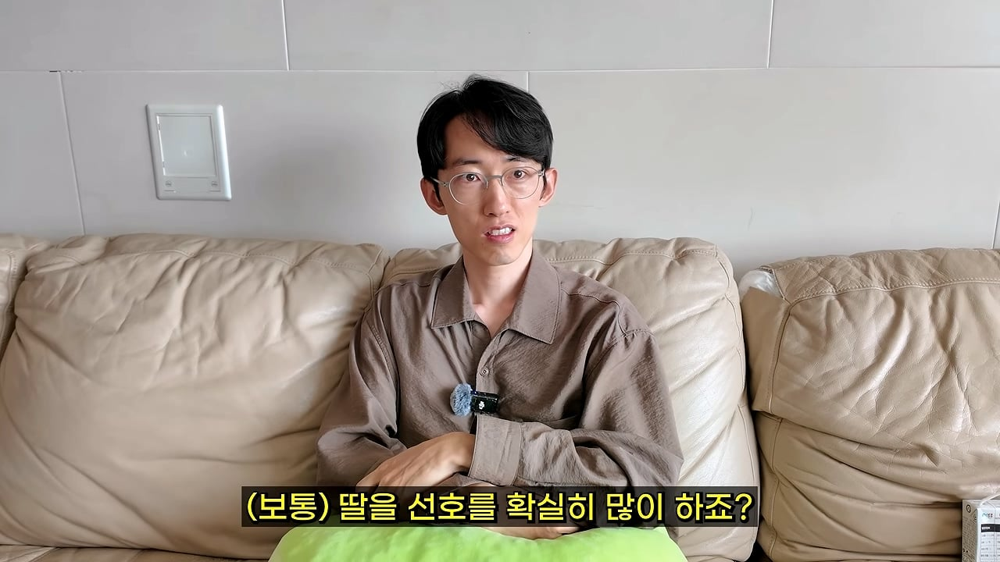
주변에서 딸바보라고 하고
인스타그램에 귀여운 여자아이들
사진 자꾸 올라온다
그런거 보면 딸이 귀엽다는거 나도 안다
그런다고 아들을 혐오 할 이유인가?
현재 아들을 혐오하는 수준까지 왔고
나는 이걸 이해 못하겠다
딸 못 낳았다고 아빠가 능력이 없다?는 말도 안된다
남자의 탓으로 돌린다고 생각한다
난자는 X 염색체
정자는 XY 염색체가 있다
2개가 만나서 수정을 한다
정자를 뿌렸다고 하면
X가 갈지 Y가 갈지 모르는거다
내가 정해서 X만 뿜는게 되냐?
Y도 마찬가지다
XY를 뿜었는데 경쟁해서 이긴 게
수정된거다
과학적으로 한다면 남자의 잘못은 없다
첫째를 아들 낳았다고 하던데
주변 반응은 어땠는지?
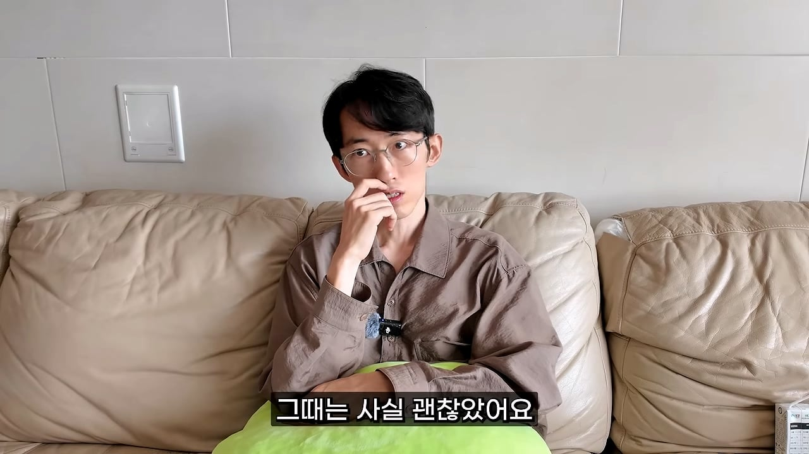
첫째의 경우 괜찮았다
아들의 경우 힘들겠다, 고생하겠다
이런 이야기 주변에서 많이 해줬다
둘째, 셋째도 아들이면 어떡하려고?
이야기 많이 들었다
1~2번 들으면 괜찮은데
주변에서 자꾸 그러면 100번 가까이 듣는다
그러면 아들 낳는게 맞나? 생각 든다
첫째가 아들이면 둘째는 딸 낳으면 되겠다
라는 이야기도 듣는다
자녀 앞에서 그런 이야기하면
아이들이 무슨 생각하겠냐? 절대 하면 안된다
딸이 없으면 안된다는
딸스라이팅 하는거다
둘째도 아들인데
그때 당시 반응은 어땠는지?
와이프가 아들이라서 울었다
엄마의 경우 딸 낳고 싶어하는 경우 많으니까
그런거 같다
주변의 반응은 안 좋았는데
아들 2명 데리고 다니면 일단 표정들이 안 좋다
거기에서 상처 받는다
걱정하는 수준을 넘어서
안 됐다, 불쌍하다는 느낌이 나오기 시작했다
아들이 무슨 잘못을 했냐? 아들도 좋다
사회 문화 때문인지 아들을 혐오하는데
이게 과연 맞는지 모르겠다
딸 낳으면 잘했다
아들 낳으면 잘못한거냐?
이건 인식을 바꿔야된다
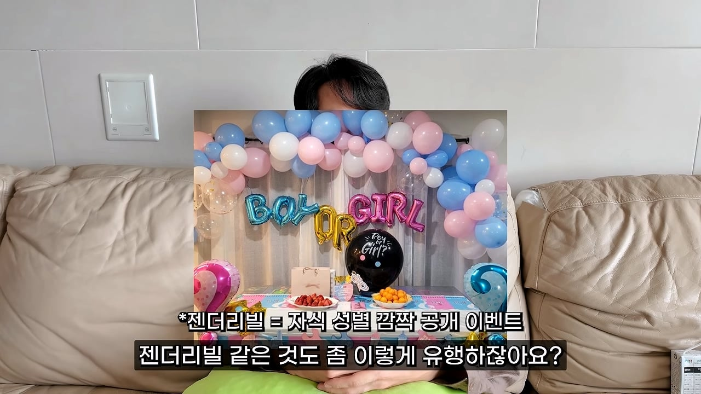
요즘 젠더리빌 많이 한다
아들이면 우울하고 딸이면 행복한데
재수 없어서 안 본다
이게 아들 혐오다
만약에 딸을 낳고 싶었는데 아들이면
그러면 아쉬울수도 있는데
주변에서 몰아가는게 이상한거다
길에서 놀고 있는데
아들이면 불쌍하다고 말하는 경우 있는데
이건 상처다
첫째 낳고 8년 넘었다 수백 번 가까이 들었다
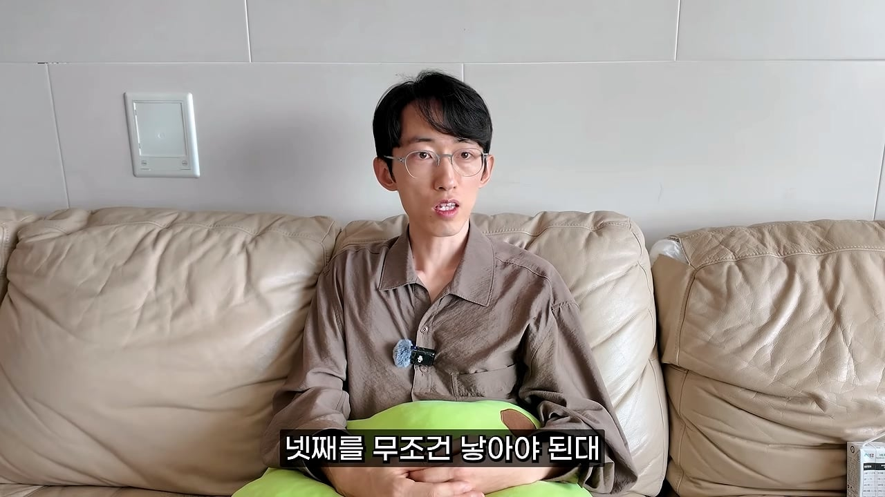
어떤 할머니가 넷째 낳아야된다고 했다
넷째는 무조건 딸이라는 이야기였다
셋인데 넷 낳아라 이건 부모님도 말 못한다
딸 없다고 이런 이야기 들어야되는지
나도 모르겠다
현재 아들이 3명이다
가끔 딸 낳아야된다, 아들이라서 불쌍하다는
이야기 하면 반박한다
아이들 앞에 있는데 그런 말하면
반박해야된다
그 상황에서 수긍하면 아이들만 이상해진다
반박하면 그 사람들도 반박하는데
엄마는 딸 있어야된다고 딸스라이팅 한다
엄마가 자기 부모님이랑 사이 좋으니까
딸 낳아야된다는 것은 공감한다
반대로 아들은 아들 역할 안하는 것도 아니다
아들도 아들 역할 하는데 왜 그러는지 모르겠다
계속 프레임을 씌우는데
아들 중에서 자식 노릇 잘하고,
못하고 하는 경우 있을거고
딸들 중에서 자식 노릇 잘하고,
못하는 경우 있을거다
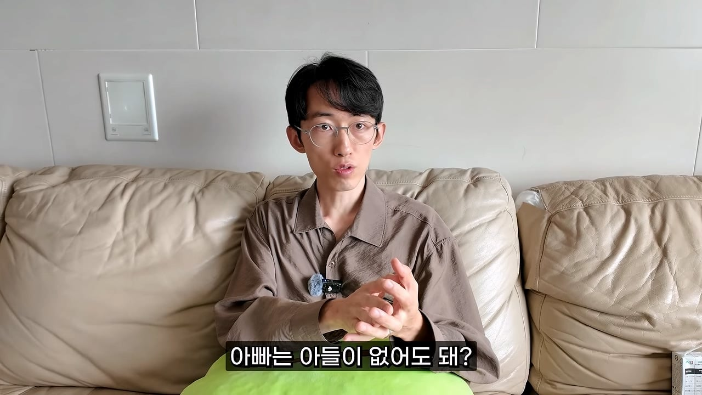
같은 논리로 엄마는 딸이 있어야된다면
아빠는 아들 없어도 되냐? 아니다
남자의 마음을 아는건 남자다
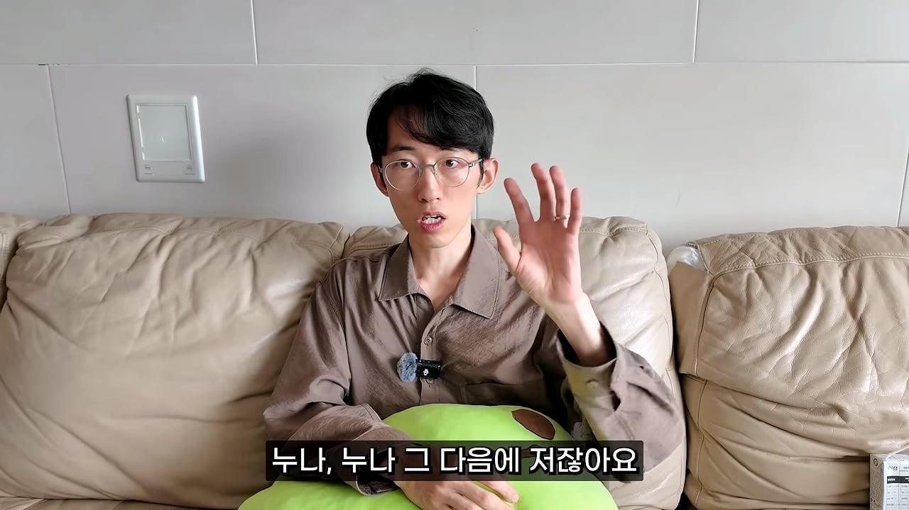
나 같은 경우에는 누나 2명에
엄마까지 포함하면 여자만 3명이다
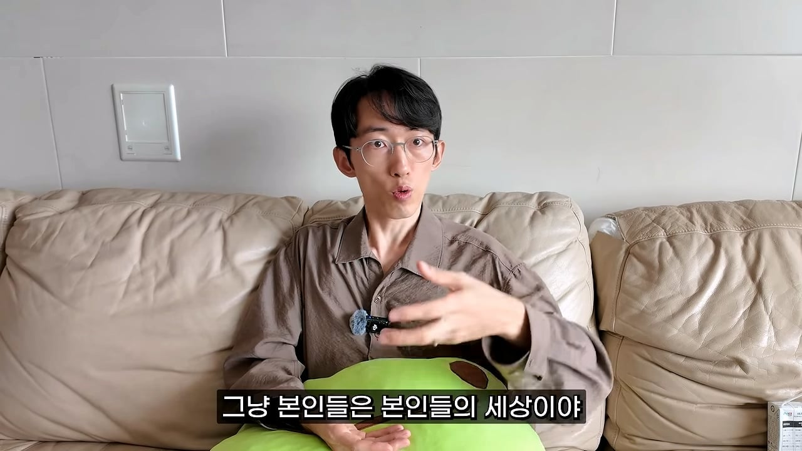
나는 남자니까 아버지의 편도 가끔 들어줬다
아버지의 입장이 이해가 가니까 그랬다
만약 아버지가 아들이 없었다면
한쪽으로 치우치는 삶을 산다
내 마음 알아주는 사람 없지
아버지와 단절 되는거다
아들, 딸 다 있으면 좋은건 맞다
딸만 있는 집안은 축복받은거라는데
난 이해 못하겠다
요즘 많이 듣는 이야기가
아들 키워봤자 소용없어다
부모 앞에서 그런 말 하는게 맞나?
조선 시대를 예로 들겠다
엄마와 딸이 있는데 어떤 사람이 와서
딸 키워봤자 소용 없어
딸은 대를 못 이어
그게 말이 되냐?
21세기인데 아들 혐오를 하는게 이상하다
아들 키워봤자 소용없다 논리에 대해서
반박해보겠다
자식은 소용 있으려고 낳는게 아니다
소용 있다는 뜻은 자식을 키워서
어디에 써 먹겠다는 뜻이다
아들을 키워서 효도를 하든,
용돈을 갖다 받치든 간병을 하든
이런 곳에 써먹겠다는거다
부모가 자식한데 그런 걸 왜 기대하는지 모르겠다
아이들이 잘 되면 부모 입장에는 당연히 좋은데
난 그런 기대 안한다
육아의 궁극적인 목표는 자식의 독립이다
1인분하게 만들고 가정까지 꾸리면
부모 역할은 다 했다고 본다
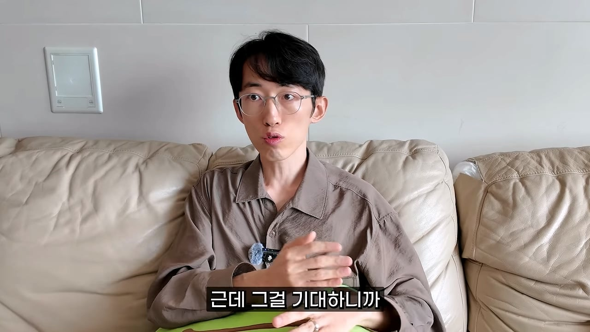
그걸 자꾸 기대하니까
소용 있다, 소용 없다는 이야기가 나온거다
그런 말 하는 사람들은 올바른 부모관을
가진 사람이 아니라고 생각한다
나, 와이프 닮은 면이 있네 이걸 알면
평생 느껴볼 수 없는 감정 다 느낀다
그게 육아에서 얻는 이득이다
그 과정에서 애틋함, 사랑
부모님의 마음도 이해한다
부모가 되어보면 자식을 위해
죽을 수 있다는 이야기 있다
낳기 전에는 나도 의심했다
낳아보면 100% 죽을 수 있다
낳아보지 않는다면 이 감정 절대 모른다
부부관계가 행복하면
자식들도 좋은 가치관 가지고 자란다
그런게 안되니까 자식들에게 의존한다
자식이 찾아오는 경우에만
부부관계가 일시적으로 회복이 되니까 그런거다
부부관계가 안 좋아서
자식에게 의존하는게 아닌가 싶다
아이들끼리 같은 성별이 좋다는 말이 있다
아들만 셋인 원장님도 동의하시는지?
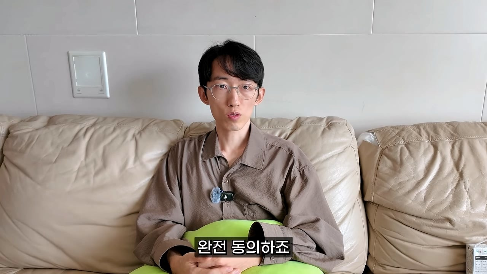
부모 입장에서는 아들, 딸 다 있는게 좋긴하다
난 누나 2명이다 어릴때부터 보고 자랐으니까
여자의 삶을 약간 이해한다
뭐가 더 낫냐고 물어보면
형이랑 남동생이 더 좋다고 생각한다
누나 2명은 친하게 지내는데
난 누나들이랑 연락도 안한다
대다수의 남매는 그런데
자식의 입장에서는 같은 성별이 더 낫다
남매의 경우 예외사항을 제외하면
사이 좋은 경우 거의 없다
남자 형제가 있으면
게임에 대해서 공감도 가능한데
난 남자 형제가 없어서 아쉬웠다
아이들 입장에서는 같은 성별이
좋은 관계가 될거라고 생각한다
아들 낳고서 주변에서
좋은 반응이 있었는지?
첫째의 경우 축복해줬다
둘쨰의 경우 출산 했다는 것 자체로
주변에서 옷 사주거나 이런 축복을 받았다
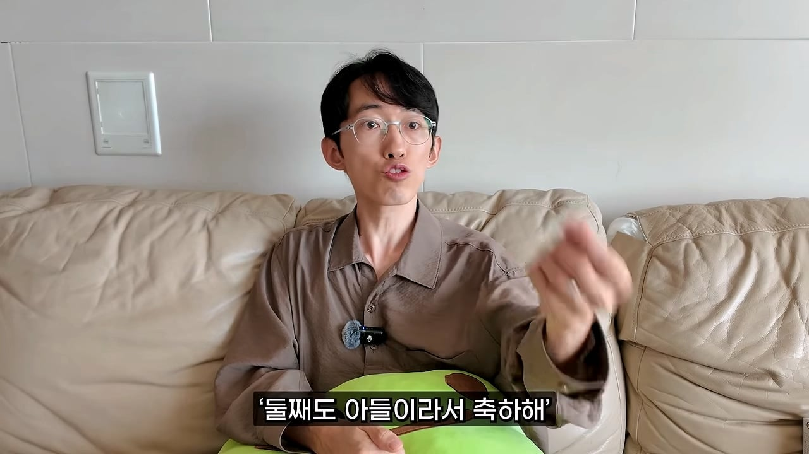
둘째도 아들이라서 축하해는
못 들어봤다
둘째, 셋째 아들이라고 했더니
축하해는 딱 1번 들어봤다
처음 자녀 계획하실때
아들 낳고 싶어하셨는지?
첫째는 딸 원했다
결혼 전에 아들 낳고 싶지 않다는
생각을 해본 적이 있간 하다
아마 나 닮은 사람이 나올까봐
두려워서 그런 생각한거같다
사춘기도 보냈고 게임도 많이했다
내가 부모님 어떻게 속 썩였는지 다 기억한다
만약 나 같은 아들이 나오면 감당 못할거라고
생각했고 농담처럼 아들 낳기 싫다고는 해봤는데
지금보니 자아비판이다
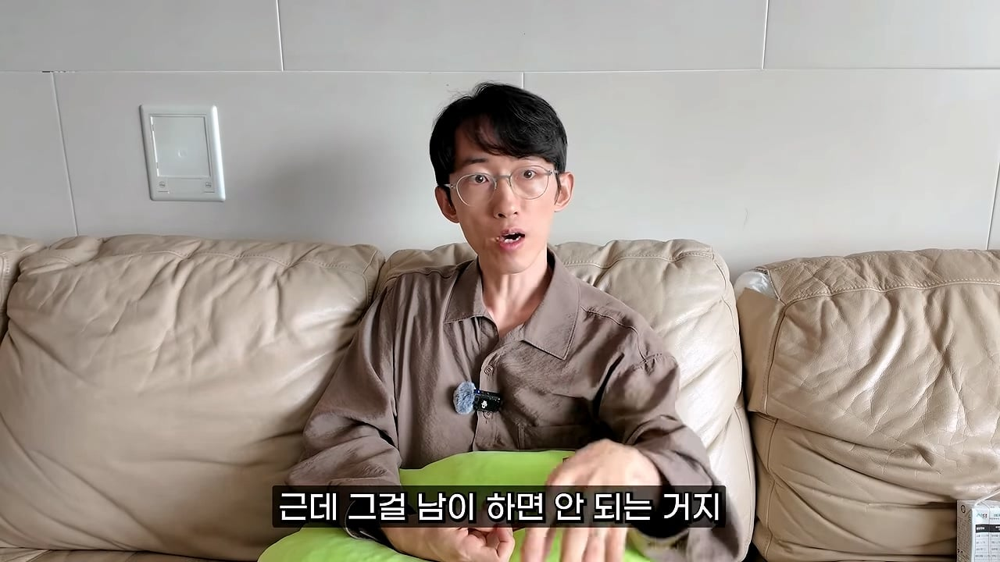
본인이 해도 되는데 남이 하면 안된다
남이 그러면 남성 비판이 되는거다
내 주변에 공부 잘했던 친구들 많다
일부는 수능 하루 전날에 PC방 갔다
그래서 아들 낳기 무섭다는거지
아들이 싫어서가 아니다
예를 들어서 딸을 많이들 좋아하고 하는게
귀엽다는 논리가 하나 있다
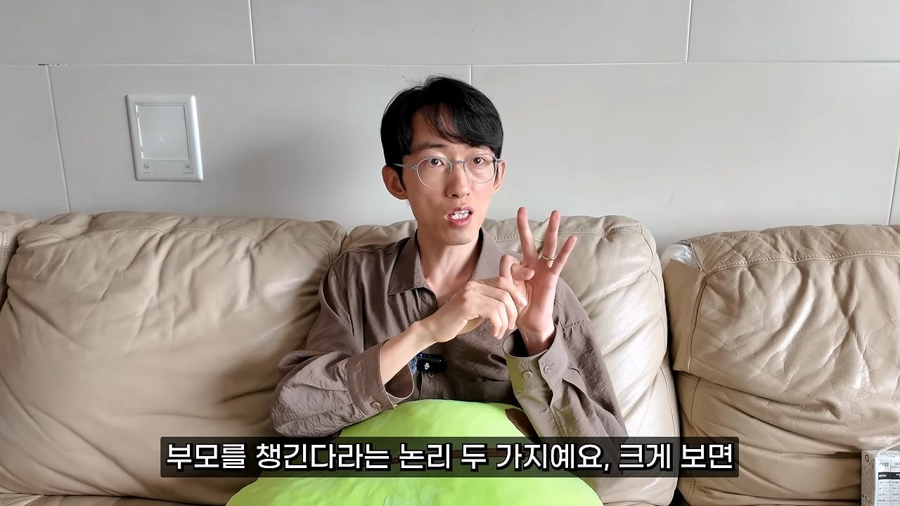
두 번째는
딸이 나중에 부모를 챙긴다는 논리다
딸이 귀엽다는 논리에 반박하겠다
평균적으로 딸이 귀여운건 맞다
아들은 든든함이 있다
셋째 6개월인데 지금 늠름하다
와이프가 첫째, 둘째 손잡고 걸어가는거 보면
난 든든하다
만약 내가 일찍 죽는다면 아들이 3명이니까
남은 와이프 잘 챙기겠구나 생각해서
듣든하다
딸은 귀여운게 있고 아들은 든든한게
있는거 같다
딸이 부모를 챙긴다는 논리 반박
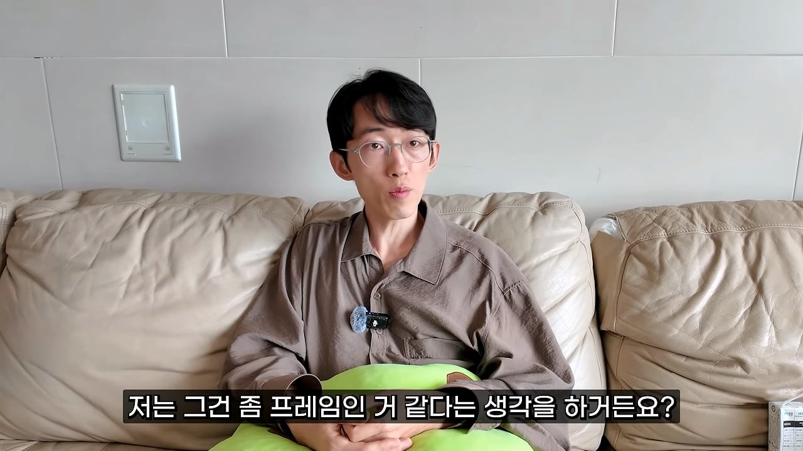
그건 프레임 같다
아들은 부모한테 용돈 안 주냐?
아들도 준다
그러면 간병으로 반박하는데
부모가 아프면 딸들이 간다고 한다
현재 한국의 사회는
일하는 남성들이 더 많다
그 사람들이 일 안하고 부모 안 챙기는건 아닐거다
내가 일 안하고 있다면 당장 간다
그런거 배제하고 병원 가는건 딸이라는
프레임 씌워버렸다
아마 이건 갈라치기 같다
난 아들 3명이라서 좋다
슬퍼하는 건 와이프 혼자다
아들을 키우기 힘든건 맞다
조금 키우면 어디 보내기도 쉬운 건 장점이다
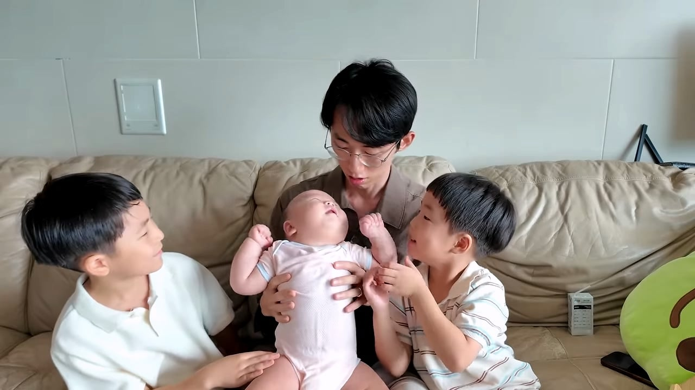
난 아들 셋이라서 행복하다
의사 같지 않은 의사 유튜브 참고
ㅋㅋㅋ 저아들들 성인될때 봐라 지금 상황이랑 반대로 역전되어있을걸? ㅋㅋㅋㅋ